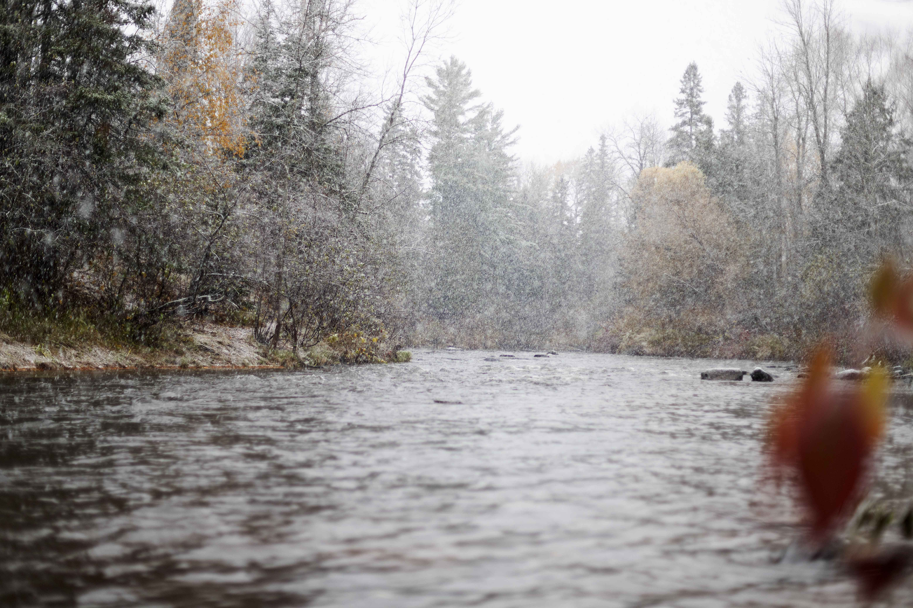
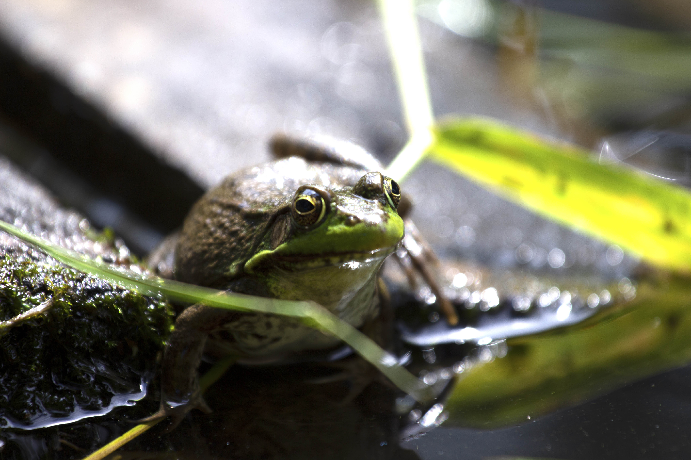

It was challenging to get a good photograph as the fish splashed so much as he swam away.
Not to mention that I had to photograph one handed as I released it with the other!
This snow took fell unexpectedly the second week of October.
The river is located in Brule Wisconsin, right next to Lake Superior.
I was able to get an extreme close-up on this frog.
The frog was sitting on our dock up north at my grandparents cabin.
A very shallow depth of field is created.